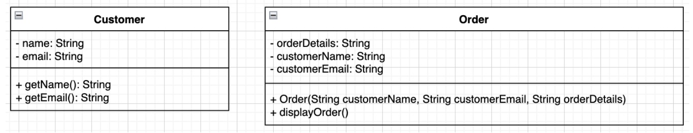
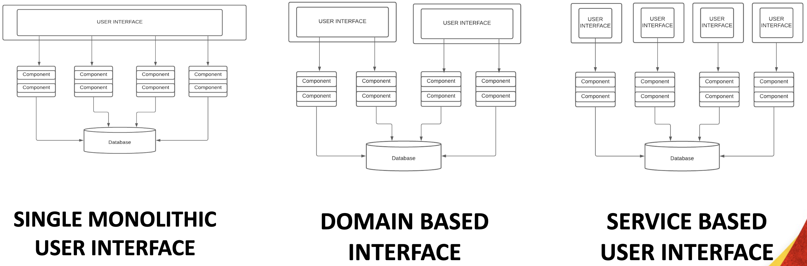

Software Architecture
Table of Contents
Abstraction
High-level representation or simplification of complex systems, design or structures.

Decomposition
Segregation is the idea of breaking down large entities into into smaller and more specialized ones. Create more modular, maintainable, and flexible software designs.
Poor Decomposition
- Customer class is responsible for all entities.
- Customer class is responsible for all operations.

Improved Decomposition
- Customer class is responsible for representing customer to access information.
- CustomerManager class is responsible for dealing with customer-related operations.

Coupling
Coupling is the density of dependencies among classes. If a class changes and there is high coupling, many other classes will need to change as well.
Tight Coupling
- Customer class creates an Order object directly within its method.
- Order class maintains a direct reference to the Customer object (customer attribute).

Loose Coupling
- Order class no longer directly references the Customer class.
- Customer information (name and email) referred as parameters with methods get() and set().

Cohesion
Cohesion is the degree of unity or closeness among the elements within a class. Each component should represent a single concept. All logic/data of the component should be directly applicable to the concept.
Low Cohesion
- Customer mixing responsibilities with createOrder and sendEmail.
- Order mixing responsabilities with calculateTotal and sendConfirmationEmail.

High Cohesion
- Order class no longer directly references the Customer class.
- Customer information (name and email) referred as parameters with methods get() and set().

Agile-Driven
Architectural approach aligns with the principles and values of agile methodologies. Agile approach emphasizes flexibility, collaboration and responsiveness to change.

Styles
Recurring patterns used in organizing the structure and components of a software system. Choosing the right architecture style is a critical decision that influences various aspects of software development.
Layered
Each layer provides a specific functionalities and services to the layers above it.
Key characteristics:
- Simplicity
- Modularity
- Maintainability
- Separation of Concerns.

MVC (Model, View, Controller)
Separate the concerns of data management, user interface and application logic.
Key characteristics:
- Separation of concerns
- User interaction
- Loose coupling
- Layered-Oriented

Model
Encapsulates the data and provides methods to manipulate and access data.
View
Represents the user interface elements and visual components.
Controller
Handles user input, processes requests, and updates the Model accordingly.
Pipeline
Structures the processing of data or tasks as a series of connected processing stages.
Key characteristics:
- Sequential
- Modularity
- Parallelism
- Isolation

Microkernel
Structure by separating the core functionality (microkernel) from additional services and functionalities.
Key characteristics:
- Flexibility
- Modularity
- Reduced complexity
- Portability

Service-Based
Structures an application as a collection independently deployable services.
Key characteristics:
- Loose coupling
- Interoperability
- Independently deployable
- Reusability

Event-Driven
The system flow is determined by events, such as user actions, messages from other systems.
Key characteristics:
- Events
- Responsiveness
- Communication
- Scalability

Other Architectures
- Space-Based
- Orchestration-Driven Service-Oriented
- Microservices